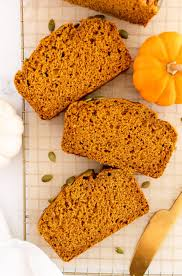
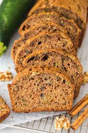

Monkey bread is a delectable and indulgent treat, oozing with warm caramel and coated in a heavenly blend of cinnamon and sugar, offering a blissful explosion of gooey goodness with every bite.
Banana bread is a mouthwatering delight that envelops your senses with the comforting aroma of ripe bananas, complemented by a moist and tender texture, making each slice a delightful blend of nostalgia and pure deliciousness.
Pumpkin bread is a heavenly creation that embodies the cozy essence of fall, with its warm spices, velvety pumpkin puree, and a moist, dense texture that melts in your mouth, leaving you craving for another slice of autumnal bliss.
Zucchini bread is a delightful revelation, where the subtle sweetness of grated zucchini melds harmoniously with the warm undertones of cinnamon and nutmeg, resulting in a moist, tender loaf that offers a guilt-free indulgence and a burst of garden-fresh flavors in every bite.
[Home]